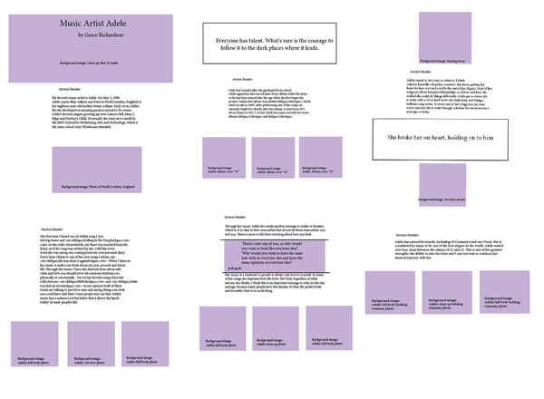
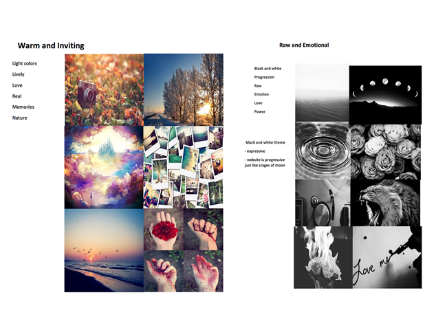
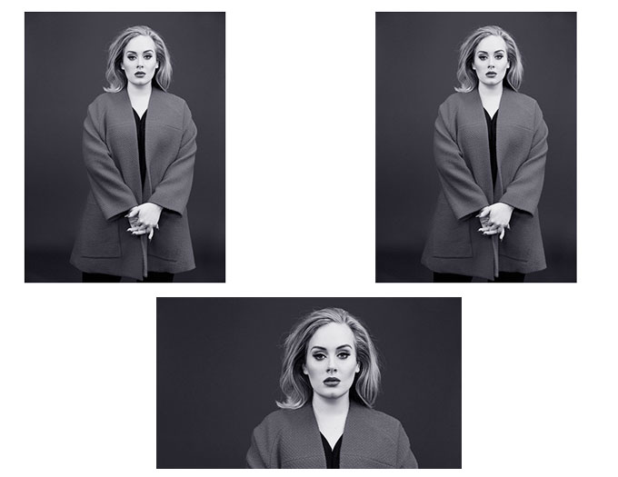
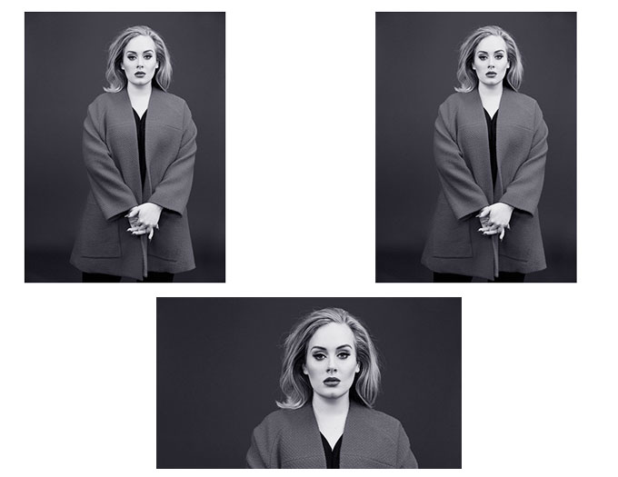

The process of creating my wireframe was very informative. By setting up a wireframe it allowed me to get all my ideas out on paper, using visuals. When creating my wireframe on the computer it was much clearer and easier to read. I was able to put in more details.The first step I took when creating my wireframe was to set everything up in the style and layout I wanted. I knew that it was important to me that my body copy flowed throughout the page as well as the visuals. Labeling where each photo went was very helpful in the end. The first time I created my wireframe I drew it all out on paper.
The moodboard was challenging for me because I was not familiar with the process at all.The first step I took when creating my moodboard was to write down all the words I wanted my website to represent. I also then included visuals that represent each particular word. I was thinking too much in it instead of going with the desired flow that I wanted my website to represent. Next time, I will use visuals again to represent the tone of the website but I will also find more reference photos that can actually be used. Another good thing would to try different directions to see which one is the best.
The process of translating my wireframe and moodboards was very smooth. Since my wireframe was very detailed all I had to do was copy from it. I had where each photo went and the color and font styles I wanted for the title and headings. What I found frustrating was I was unfamiliar with the coding of CSS , so many aspects of the design. Another challenge was having to put the multiple photos in photoshop and optimizing them was very time-consuming. The use of different styles for padding was very confusing.
 

I like how all the steps of the project were broken down, it made it much simpler. There is nothing that I would change because I think all the steps taken were necessary to have a successful webpage.